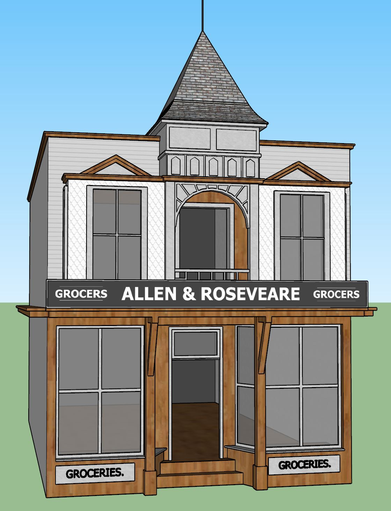
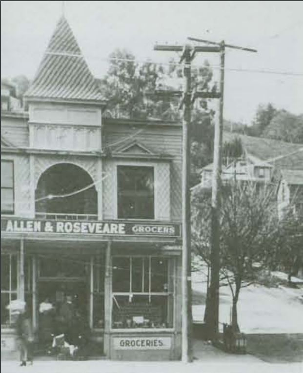

TimeWalk Unity Model
106 Throckmorton Ave., Mill Valley, CA 94941
"The first lot sold at the auction of 1890 was located at the corner of Bernard and Throckmorton Avenues. It was leased as the site of a carpenter shop which was replaced by 1894 with a two story building crowned with a cupola that became Wheeler Martin's Pioneer Grocery. Martin was appointed postmaster in 1894 and the post office was moved to his store from the railroad station." Source: Mill Valley Historical Society Review, Spring 1984
In the 1920's this building was known as Roseveare & Allen Grocers.
 
TimeWalk Unity Model